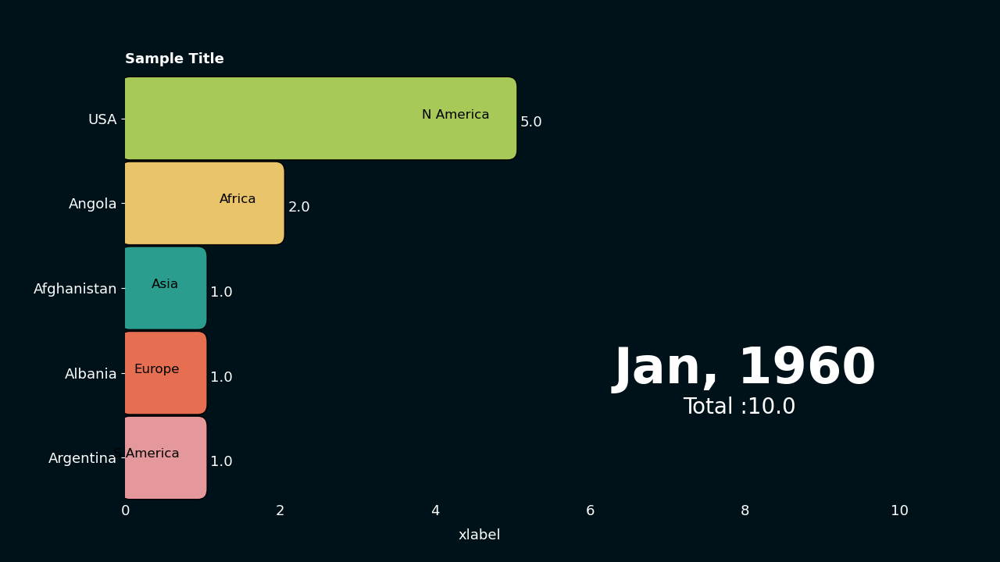

Creating a dark themed bar chart race
The data
We will use the previous data for this animation
df = pd.DataFrame(
{
"time": ["1960-01-01", "1961-01-01", "1962-01-01"],
"Afghanistan": [1, 2, 3],
"Angola": [2, 3, 4],
"Albania": [1, 2, 5],
"USA": [5, 3, 4],
"Argentina": [1, 4, 5],
}
).set_index("time")
Additional variables
There might be situations where we would like to show additional information for each column or date.
For instance in the previous data we would like to show continents of each country.
In such cases use a Dataframe containing the additional variables in this format.
columns, continents
"Afghanistan", "Asia"
"Angola", "Africa"
"Albania", "Europe"
"USA", "N America"
"Argentina" "S America"
col_var = pd.DataFrame(
{
"columns": ["Afghanistan", "Angola", "Albania", "USA", "Argentina"],
"continent": ["Asia", "Africa", "Europe", "N America", "S America"],
}
).set_index("columns")
dfr.add_var(col_var=col_var) module to add these dataframes.
post_update
post_update(self, i) is a function that runs for every frame. It is very useful for extending
the basic animation. In this example we will use post_update to annotate continent names on bars.
def post_update(self, i):
# annotates continents next to bars
for ind, (bar, x, y) in enumerate(
zip(self.bar_attr.top_cols, self.bar_attr.bar_length, self.bar_attr.bar_rank)
):
self.ax.text(
x - 0.3,
y,
self.dfr.col_var.loc[bar, "continent"],
ha="right",
color="k",
size=12,
zorder=ind,
)
Changing colors
All the text colors are set to white and the background color is made dark blue ("#001219").
We have also manually set colors for each bar.bar_cols = {
"Afghanistan": "#2a9d8f",
"Angola": "#e9c46a",
"Albania": "#e76f51",
"USA": "#a7c957",
"Argentina": "#e5989b",
}
The final code
import os
import matplotlib as mpl
import numpy as np
import pandas as pd
from matplotlib import pyplot as plt
import pynimate as nim
dir_path = os.path.dirname(os.path.realpath(__file__))
mpl.rcParams["axes.facecolor"] = "#001219"
# Turning off the spines
for side in ["left", "right", "top", "bottom"]:
mpl.rcParams[f"axes.spines.{side}"] = False
def post_update(self, i):
# annotates continents next to bars
for ind, (bar, x, y) in enumerate(
zip(self.bar_attr.top_cols, self.bar_attr.bar_length, self.bar_attr.bar_rank)
):
self.ax.text(
x - 0.3,
y,
self.dfr.col_var.loc[bar, "continent"],
ha="right",
color="k",
size=12,
zorder=ind,
)
df = pd.read_csv(dir_path + "/data/sample.csv").set_index("time")
col_var = pd.DataFrame(
{
"columns": ["Afghanistan", "Angola", "Albania", "USA", "Argentina"],
"continent": ["Asia", "Africa", "Europe", "N America", "S America"],
}
).set_index("columns")
bar_cols = {
"Afghanistan": "#2a9d8f",
"Angola": "#e9c46a",
"Albania": "#e76f51",
"USA": "#a7c957",
"Argentina": "#e5989b",
}
cnv = nim.Canvas(figsize=(12.8, 7.2), facecolor="#001219")
dfr = nim.BarDatafier(df, "%Y-%m-%d", "3d")
dfr.add_var(col_var=col_var)
bar = nim.Barhplot(dfr, post_update=post_update, rounded_edges=True, grid=False)
bar.set_column_colors(bar_cols)
bar.set_title("Sample Title", color="w", weight=600)
bar.set_xlabel("xlabel", color="w")
bar.set_time(
callback=lambda i, datafier: datafier.data.index[i].strftime("%b, %Y"), color="w"
)
bar.set_text(
"sum",
callback=lambda i, datafier: f"Total :{np.round(datafier.data.iloc[i].sum(), 2)}",
size=20,
x=0.72,
y=0.20,
color="w",
)
bar.set_bar_annots(color="w", size=13)
bar.set_xticks(colors="w", length=0, labelsize=13)
bar.set_yticks(colors="w", labelsize=13)
bar.set_bar_border_props(
edge_color="black", pad=0.1, mutation_aspect=1, radius=0.2, mutation_scale=0.6
)
cnv.add_plot(bar)
cnv.animate()
plt.show()
Result!
